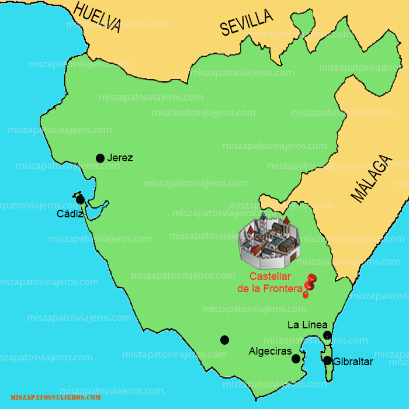
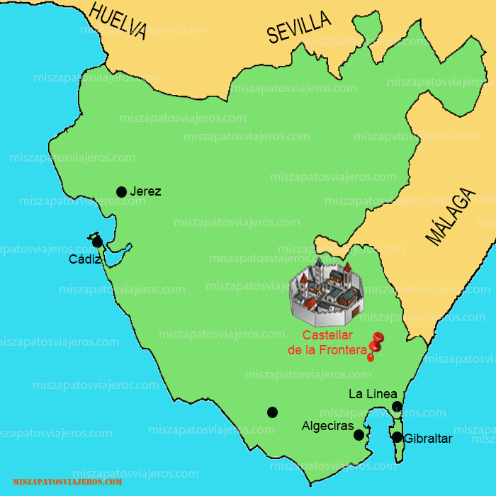

Punto de partida


El Castillo de Castellar es una villa-fortaleza del siglo XIII, localizado en Castellar de la Frontera (Andalucía, España). Se encuentra en el núcleo llamado "Castellar viejo", sobre una montaña del parque natural de los Alcornocales (frente a la entrada del castillo se encuentra un punto de información del parque1) Castellar de la Frontera se asienta en pleno centro de la Comarca del Campo de Gibraltar, en el sudeste de la Provincia de Cádiz. Está formado por tres núcleos de población, la Almoraima, Pueblo Nuevo de Castellar y la Villa-Fortaleza de Castellar de la Frontera (Castellar Viejo).
El Castillo de Castellar es oficialmente miembro de la asociación Los Pueblos Más Bonitos de España desde 2019 adoptando el nombre oficial de Castellar de la Frontera.
Entorno
La Almoraima está muy cerca de Pueblo Nuevo de Castellar. En ella está localizada la conocida empresa del mismo nombre gestionada por el Ministerio de Medio Ambiente, así como la estación de ferrocarril, lo que supone un plus en las comunicaciones de la localidad. A poco más de un kilómetro se encuentra Castellar Nuevo, pueblo joven y moderno con lucidos balcones, patios de flores y blancas fachadas. Construido a finales de la década de los 60, originando con ello el traslado masivo desde el antiguo pueblo de Castellar en el año 1971.
Palacio del Marques de Moscoso junto al Castillo
El Castellar Viejo, construido sobre un promontorio rocoso, guarda su casco histórico dentro de un castillo árabe del siglo XIII a 248m. de altitud. Entrar en la Villa-Fortaleza de Castellar de la Frontera (Monumento Histórico Artístico desde 1963) es sumergirse en un pasado de olores islámicos, en un muro de blancura y naturaleza viva. Recorrer sus callejuelas zigzagueantes, decoradas con macetas y arriates es reencontrarse con la historia y con las más viejas tradiciones de Andalucía.
La Fortaleza de Castellar se encuentra en un enclave privilegiado, rodeado de un paraje de ensueño en pleno contacto con la naturaleza. En este entorno podemos respirar el aire puro y limpio que nos depara un lugar tan sorprendente como es el parque natural de Los Alcornocales. Es aquí donde tenemos la ocasión de escuchar uno de los espectáculos más vibrantes de los que tienen lugar en el mundo animal durante el otoño. La berrea, fenómeno que define la brama que emiten los machos de ciervos durante la época de celo. Es al atardecer cuando más poderoso se vuelve el bramido del ciervo, que anuncia así su llegada.
Obra publicada con Licencia Creative Commons Reconocimiento Compartir igual 4.0